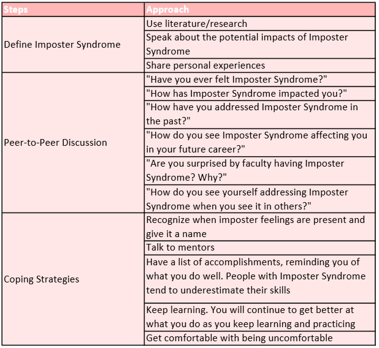

What is Imposter Syndrome?
Imposter Syndrome is a learning-related issue that prevents students and working professionals from performing their best. This phenomenon is defined by feelings of intellectual fraudulence, not fitting in, and a failure to internalize success (Gibson-Beverly & Schwartz, 2008). The populations that are most at-risk are women, first-generation college students, and racial minorities (Canning, LaCrosse, Kroeper, & Murphy, 2019; Gibson-Beverly & Schwartz, 2008). People identifying with this syndrome often attribute their success to luck, chance, or even mistake and feel undeserving of their accomplishments (Baumann, Faulk, Vanderlan, Chen, & Bhayani, 2020). In school, the impact of these feelings can include decreased performance and lower course outcomes (Schinske & Tanner, 2014). In an industry setting, identifying with this phenomenon is tied to burnout, lower job satisfaction, less career planning, and lower overall involvement in the workplace (Villwock, Sobin, Koester, & Harris, 2016; Vergauwe, Wille, Feys, De Fruyt, & Anseel, 2014; Neureiter & Traut-Mattausch, 2016). It is important to target this issue early on so that students can identify when imposter feelings are present and effectively address them before they result in negative impacts.
What can your department do?
To help remedy this issue, your department can host informative, discussion-based sessions that expose students to this learning related issue. The reason why a college environment would be best is because all the populations at-risk are present here – first-generation college students, women, and racial minorities. This is also true of an industry setting, however, college is usually the first place that students may begin to identify with Imposter Syndrome (Canning, LaCrosse, Kroeper, & Murphy, 2019). Having universities hold these workshops, then, would be a great way to target the issue as soon as it begins to manifest.
The sessions can have three main components:
- Faculty member acts as a discussion facilitator and begins by introducing the phenomenon and sharing their own experiences with it to demonstrate that imposter feelings could be present regardless of achievement.
- Facilitator poses reflective questions and has students share their own experiences with Imposter Syndrome to foster a feeling of togetherness without calling for too much vulnerability.
- Facilitator discusses coping strategies.
Click for a sample agenda
Agenda is inspired by the work done by Haney, Birkholz, and Rutledge (2018) and Baumann, Faulk, Vanderlan, Chen, and Bhayani (2020)
While these sessions could be held at a university-wide level, it is best for each department to host them separately because it creates a more intimate environment when students feel familiar with the discussion leader and other attendees.
Why would this work?
There are multiple research studies supporting this approach. For example, a study conducted by Haney, Birkholz, and Rutledge (2018) sampled students from various medical professions and had them complete a 1-day workshop on Imposter Syndrome led by a faculty member. After the event, students reported feeling empowered as a result of the workshop, one student felt confident enough to apply for a new position they had been thinking about, and another one found it less intimidating to submit a paper to a conference.
Another research article supporting this solution was conducted by Baumann, Faulk, Vanderlan, Chen, and Bhayani (2020). Rather than doing a workshop, however, they had multiple 30–45-minute faculty-led small-group discussions on the topic of Imposter Syndrome. After each session, a survey was given to the students to assess the effectiveness of the event. It was found that 96% of the participants felt comfortable recognizing Imposter Syndrome in themselves and 81% felt that the session was successful in remedying their feelings (Baumann, Faulk, Vanderlan, Chen, & Bhayani, 2020).
The high value of both the qualitative and quantitative data recorded as a result of these studies demonstrates the strong impact of holding informative, reflective sessions on Imposter Syndrome. Students leave these events with a new perspective in mind and are better equipped to face this learning-related issue on their own.
Why might this not work?
As with any solution to Imposter Syndrome, there are limitations to consider before your department considers using informative, discussion based workshops to help with this learning-related issue:
- Sessions tend to go better when students see familiar faces. Otherwise, they may shy away from sharing their personal experiences in a group of strangers. A potential remedy could be encouraging students to bring a friend along.
- Impact cannot be replicated from session to session, meaning that the quality of the discussion cannot be predicted ahead of time. Not all workshops are guaranteed to have students feeling empowered at the end.
- It is possible that attendees may choose not to engage very well in discussion, making for a very uncomfortable and subsequently ineffective experience.